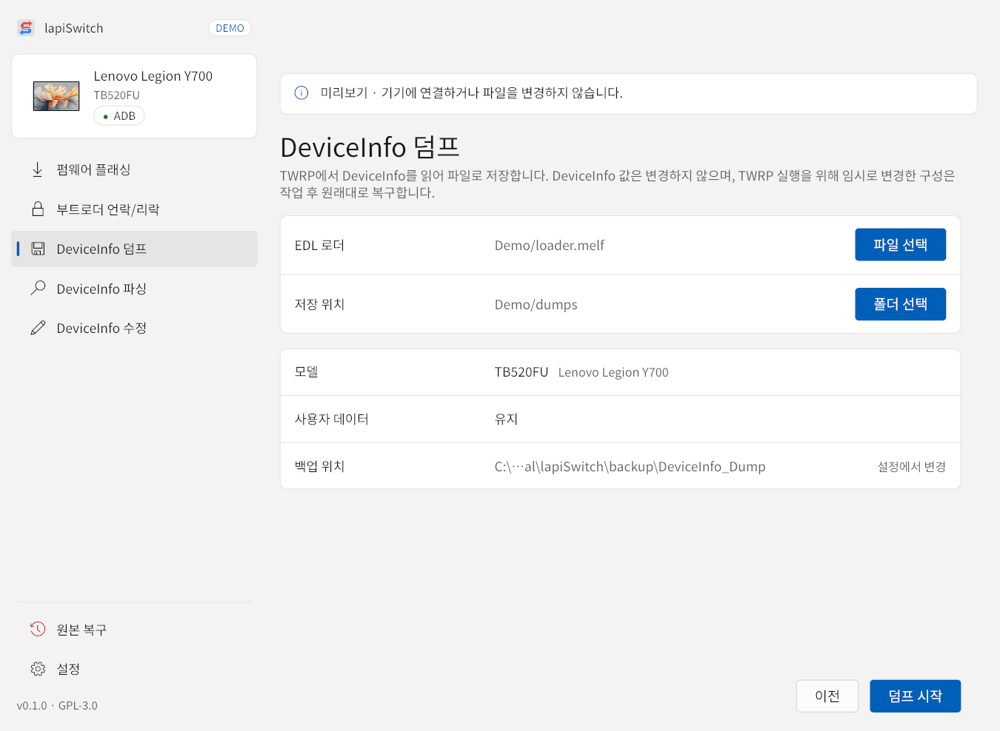
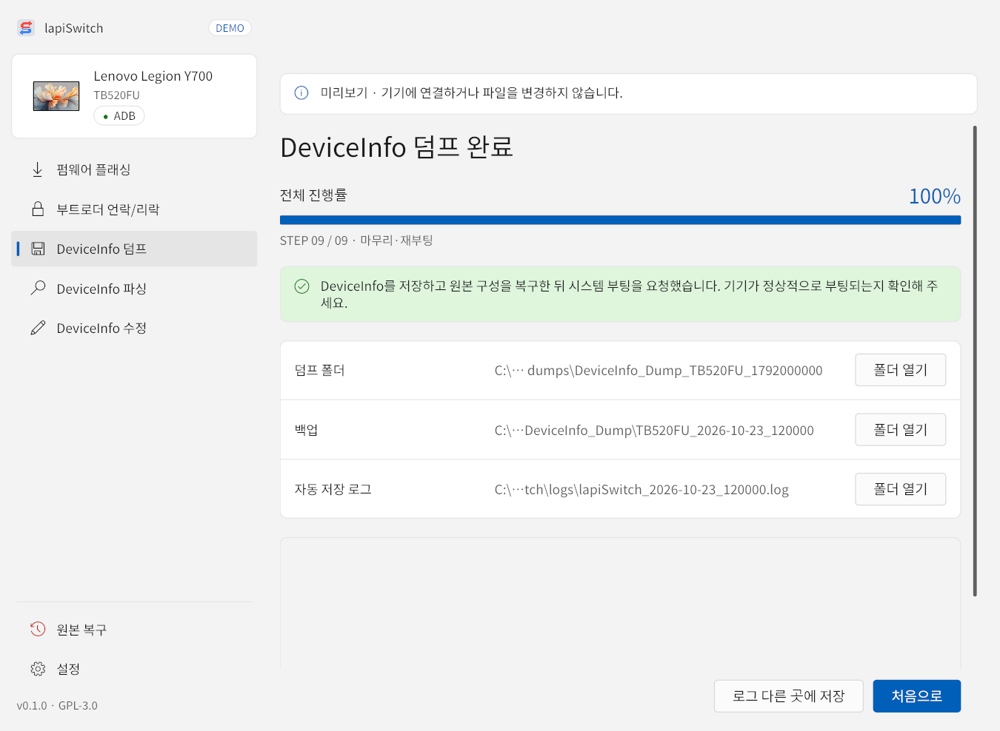

TWRP에서 DeviceInfo를 읽어 파일로 저장합니다. 기기의 DeviceInfo 값은 바꾸지 않고 사용자 데이터도 유지하며, TWRP 실행을 위해 임시로 바꾼 구성은 작업 후 원래대로 복구합니다. 동의 체크 없이 바로 시작할 수 있습니다.

- 파일 선택으로 EDL 로더를 고릅니다.
- 폴더 선택으로 덤프를 저장할 위치를 고릅니다. 백업 위치와 따로 정합니다.
- 덤프 시작을 누릅니다. 진행은 9단계입니다.
DeviceInfo를 두 번 읽어 내용이 같을 때만 저장합니다. 저장 위치 아래에 DeviceInfo_Dump_<모델>_<유닉스 시간> 폴더가 생기고, 그 안에 4096바이트 원본 DeviceInfo.bin과 모델·시간·SHA-256을 적은 info.json이 저장됩니다.

TB522FU
TB522FU는 덤프만 지원합니다. 덤프 화면은 TB520FU와 같고, 모델이 TB522FU로 표시됩니다. 실기기 검증 전이므로 결과를 꼭 확인하세요.